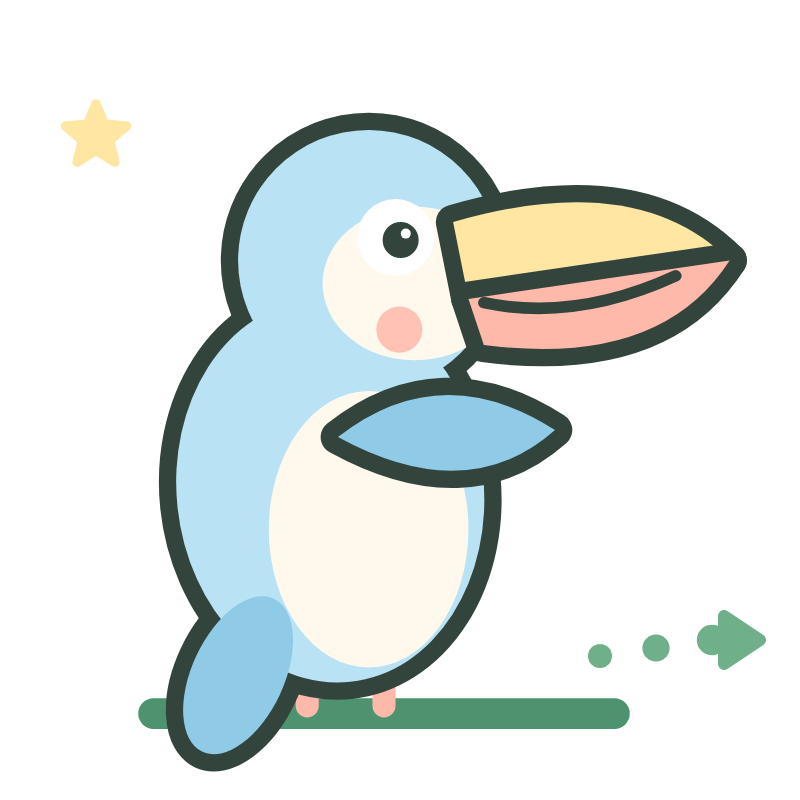

ESPACIO FAMILIA
 Salir
Salir
Salir
✓ Consulta exitosa
Así aprende Sara
Sara Mosquera · Primero
Exploradores de primero · Matemáticas

Actividades realizadas
3
Última actividad
4 de 5
Rendimiento ilustrativo
✓ Buen desempeño
Sus últimos descubrimientos
Contemos las frutas
4 de 5 · realizadas
Contemos mariposas
5 de 5 · realizadas
Números del 1 al 5
3 de 5 · realizadas